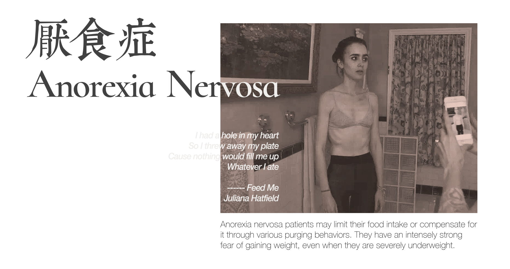
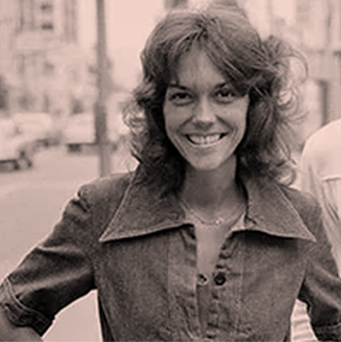
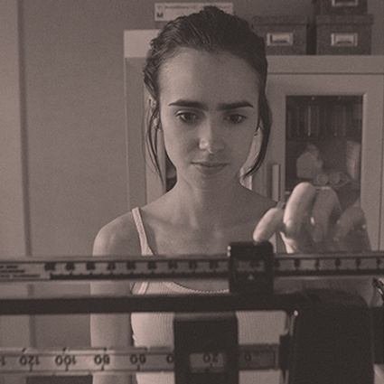

何为ED
自测量表
故事驛站
話題廣場
關於我們

神經性厭食症(Anorexia Nervosa, AN)最顯著的表徵之一為：因限制能量攝取而導致顯著的低體重。
作為參考，常用來衡量成年人低重的臨界點是BMI 小於 18.5 kg/m2，兒童和青少年的低重臨界點為低於該年齡BMI的第5個百分位（舉個例子，現在隨機抽取100名同齡兒童，將樣本按體重由低到高排序並分別編碼爲1~100，那被編號爲1~5的兒童則會被判斷為處於低重狀態）。
注：如符合其他診斷條件但並不滿足低重的描述，短時間內快速減重（如6個月內體重減少原先體重的20%以上）也可以替代低重的診斷標準。兒童和青少年的症狀體現可能是沒有達到該發展階段應有的體重增長而非減重。
即使處於顯著的低重狀態，患者在心理上仍強烈害怕體重的增加，並有持續的影響體重恢復的行為，其中包括：減少能量攝入，如節食、禁食、斷食、嚼吐（指咀嚼食物後吐出，不吞咽食物）；補償性行為，如催吐、濫用瀉藥、減肥藥或利尿劑；增加能量消耗，如過度鍛鍊。
神經性厭食症患者通常將低體重和「苗條的身形」設為自我評價的重要來源，並持續缺乏對目前低體重的嚴重性認知，以下是一些過分關注體重和身形的表現：反復上秤稱重，在鏡子前打量自己的身形，時刻在意、並控制攝入食物的卡路里，不斷搜索與減重相關的資訊等；除此之外，還體現在有嚴重的逃避行為上，如拒絕在家中擺放鏡子，不願意知道別人的體重，或者不買特定型號的衣服等。
相關研究顯示，厭食症高發年齡段為14-20歲，90%-95%的厭食症患者為女性。在大多數情況下，厭食症都以節食為開端，節食行為隨生活壓力的經歷（如父母離婚、進入新環境、或遭遇個人的失敗等）升級演變成厭食症，5%到15%的患者會因為低體重和節食帶來的併發症而死亡，是死亡率最高的精神疾病。

Karen Carpenter
/
代表作品有《Yesterday Once More》的卡朋特樂隊成員之一卡倫·卡朋特逝世時年僅32歲。卡倫生前患有嚴重的厭食症，為了保持身形長期節食、服用輕瀉劑等

Lily Collins
/
電影《深刻入骨》(To The Bone)中的女主角莉莉·柯林斯本人曾在自傳式小說Unfiltered提到自己青春期飽受厭食症的折磨，艾倫這一角色徬彿讓她照見自身
LouiseGlück
/
2020諾貝爾文學獎獲得者露易絲·格呂克曾患厭食症。16歲時，她在心理咨詢師的建議下休學，經歷了七年的精神分析才得以重新面對這「不讓你失望的世界」
When it comes to ED...
聯繫我們
提到ED,你想起了什麼? 一.段經歷、一個亟需解决的問题 抑或是改善现狀的想法? 我們雖在這荒謬的世間行走 却從未孤立無援。 請分享你與ED的故事，讓更多需要的人看见!
分享我的故事